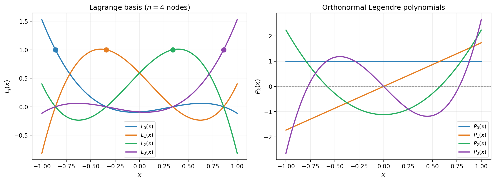
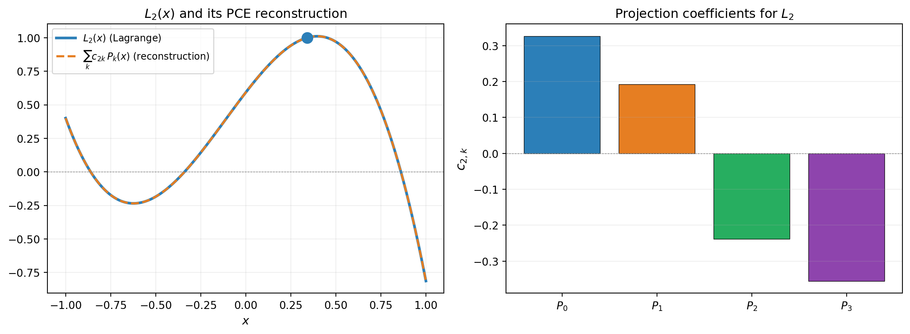
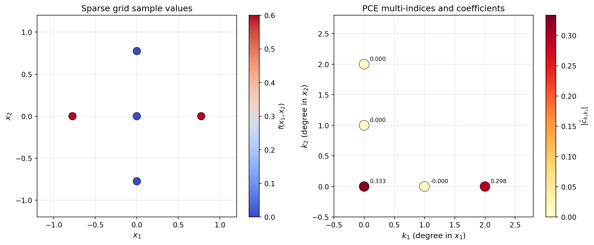
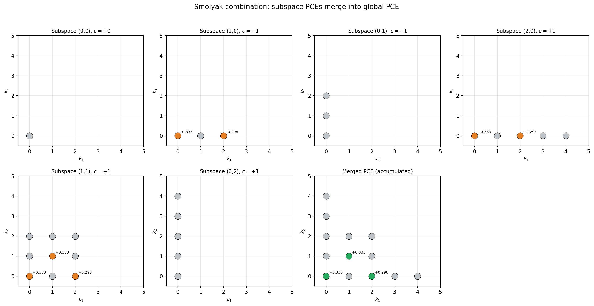
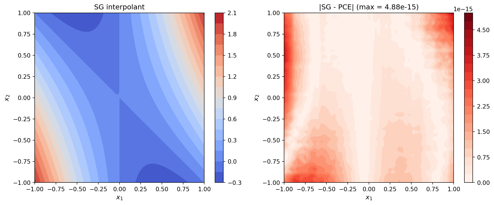

import numpy as np
import matplotlib.pyplot as plt
from pyapprox.util.backends.numpy import NumpyBkd
from pyapprox.probability.univariate.uniform import UniformMarginal
from pyapprox.surrogates.affine.univariate import create_bases_1d
from pyapprox.surrogates.sparsegrids import (
IsotropicSparseGridFitter,
TensorProductSubspaceFactory,
create_basis_factories,
SparseGridToPCEConverter,
TensorProductSubspaceToPCEConverter,
)
from pyapprox.surrogates.affine.indices import LinearGrowthRule
bkd = NumpyBkd()
np.random.seed(42)From Sparse Grids to PCE: The Mathematics of Basis Conversion
PyApprox Tutorial Library
Understand the spectral projection that converts Lagrange-based sparse grid interpolants into Polynomial Chaos Expansions, with visual intuition.
TipDownload Notebook
Learning Objectives
After completing this tutorial, you will be able to:
- Explain why a Lagrange interpolant and a PCE are two representations of the same polynomial space
- Derive the spectral projection formula that converts a 1D Lagrange basis function to orthonormal polynomial coefficients
- Visualize the 1D projection: Lagrange basis functions overlaid with their orthonormal polynomial expansions
- Extend the 1D projection to tensor products via Kronecker structure
- Describe how the Smolyak combination merges subspace PCEs into a single global PCE
Prerequisites
Complete:
- Isotropic Sparse Grids — Smolyak combination and sparse grid construction
- Building a Polynomial Chaos Surrogate — PCE basics and orthonormal polynomial bases
Setup
Two Bases for the Same Space
A polynomial of degree \(n\) can be expressed equally well in two bases:
Lagrange basis \(\{L_j(x)\}_{j=0}^{n-1}\): defined by interpolation nodes \(\{x_j\}\). Each \(L_j\) peaks at \(x_j\) and vanishes at all other nodes. Interpolation is trivial: \(\hat{f}(x) = \sum_j f(x_j) L_j(x)\).
Orthonormal polynomial basis \(\{P_k(x)\}_{k=0}^{n-1}\): defined by the probability measure \(\mu\), satisfying \(\int P_i P_j\, d\mu = \delta_{ij}\). Moment computation is trivial: \(\mathbb{E}[\hat{f}] = c_0\), \(\text{Var}[\hat{f}] = \sum_{k>0} c_k^2\).
Neither is “better” — they serve different purposes.
from _figures._sparse_grids import plot_two_bases
marginal = UniformMarginal(-1.0, 1.0, bkd)
bases_1d = create_bases_1d([marginal], bkd)
ortho_basis = bases_1d[0]
ortho_basis.set_nterms(4)
# Get Gauss-Legendre nodes for n=4
quad_pts, _ = ortho_basis.gauss_quadrature_rule(4)
nodes = bkd.to_numpy(quad_pts).flatten()
x_plot = np.linspace(-1, 1, 200)
x_plot_bkd = bkd.asarray(x_plot.reshape(1, -1))
ortho_vals = bkd.to_numpy(ortho_basis(x_plot_bkd)) # (200, 4)
fig, (ax1, ax2) = plt.subplots(1, 2, figsize=(12, 4.5))
plot_two_bases(ax1, ax2, nodes, x_plot, ortho_vals)
plt.tight_layout()
plt.show()
Spectral Projection — the 1D Case
Since both bases span the same polynomial space, we can project each Lagrange basis function onto the orthonormal basis. Given \(L_j(x)\) and orthonormal polynomials \(\{P_k(x)\}_{k=0}^{n-1}\) satisfying \(\int P_i P_j\, d\mu = \delta_{ij}\):
\[ c_{jk} = \int L_j(x)\, P_k(x)\, d\mu(x) = \sum_{i} w_i\, L_j(x_i^q)\, P_k(x_i^q) \]
where \((x_i^q, w_i)\) are Gauss quadrature points and weights. This integral is exact when the quadrature rule has enough points (degree \(\geq 2n - 1\)).
The full conversion from Lagrange to PCE follows: if \(\hat{f}(x) = \sum_j f(x_j)\, L_j(x)\), then
\[ \hat{f}(x) = \sum_k \hat{c}_k\, P_k(x), \qquad \hat{c}_k = \sum_j f(x_j)\, c_{jk} \]
So the PCE coefficient for \(P_k\) is a weighted sum of the function values at the interpolation nodes, where the weights are the projection coefficients \(c_{jk}\).
We can compute this projection matrix using PyApprox’s internal API:
from _figures._sparse_grids import plot_projection_1d
# Build the converter's 1D projection matrix
converter_1d = TensorProductSubspaceToPCEConverter(bkd, bases_1d)
# Compute the projection coefficient matrix
flat_nodes = bkd.asarray(nodes)
proj_coefs = converter_1d._compute_univariate_projection_coefficients(
dim=0, lagrange_nodes=flat_nodes
)
proj_coefs_np = bkd.to_numpy(proj_coefs) # (npts, npts) = (4, 4)
j_show = 2
fig, (ax1, ax2) = plt.subplots(1, 2, figsize=(12, 4.5))
plot_projection_1d(ax1, ax2, x_plot, nodes, ortho_vals, proj_coefs_np, j_show)
plt.tight_layout()
plt.show()
TipWhy is the reconstruction exact?
Both \(\{L_j\}\) and \(\{P_k\}\) span the space of polynomials of degree \(\leq n-1\). The spectral projection computes the coordinates of \(L_j\) in the orthonormal basis — a change of basis within the same space is always exact. The Gauss quadrature integral is exact because \(L_j \cdot P_k\) has degree \(\leq 2(n-1)\) and the quadrature rule integrates polynomials of degree \(2n - 1\) exactly.
From 1D to Tensor Products
For a tensor product subspace with multi-index \((\ell_1, \ell_2)\), the Lagrange interpolant factorizes:
\[ \hat{f}(\mathbf{x}) = \sum_{j_1, j_2} f(x_{j_1}, x_{j_2})\, L_{j_1}(x_1)\, L_{j_2}(x_2) \]
Each dimension can be projected independently:
\[ \hat{f}(\mathbf{x}) = \sum_{k_1, k_2} \hat{c}_{k_1 k_2}\, P_{k_1}(x_1)\, P_{k_2}(x_2) \]
where \(\hat{c}_{k_1 k_2} = \sum_{j_1, j_2} f(x_{j_1}, x_{j_2})\, c^{(1)}_{j_1 k_1}\, c^{(2)}_{j_2 k_2}\).
This is a tensor contraction — each dimension is projected independently, so no multivariate quadrature is needed.
from _figures._sparse_grids import plot_2d_tp
# Build a 2D example: f(x1, x2) = x1^2 + x1*x2
marginals_2d = [
UniformMarginal(-1.0, 1.0, bkd),
UniformMarginal(-1.0, 1.0, bkd),
]
factories = create_basis_factories(marginals_2d, bkd, basis_type="gauss")
growth = LinearGrowthRule(scale=2, shift=1)
tp_factory = TensorProductSubspaceFactory(bkd, factories, growth)
# Level-1 subspace (3 points per dim = 9 total)
level = 1
fitter = IsotropicSparseGridFitter(bkd, tp_factory, level)
sg_samples = fitter.get_samples()
def fun_2d(samples):
x1, x2 = samples[0, :], samples[1, :]
return bkd.reshape(x1 ** 2 + x1 * x2, (1, -1))
sg_values = fun_2d(sg_samples)
result = fitter.fit(sg_values)
sg_surr = result.surrogate
# Convert to PCE
bases_1d_2d = create_bases_1d(marginals_2d, bkd)
converter = SparseGridToPCEConverter(bkd, bases_1d_2d)
pce_2d = converter.convert(sg_surr)
# Extract PCE info
pce_indices = bkd.to_numpy(pce_2d.get_basis().get_indices()) # (nvars, nterms)
pce_coefs = bkd.to_numpy(pce_2d.get_coefficients()) # (nterms, nqoi)
fig, (ax1, ax2) = plt.subplots(1, 2, figsize=(12, 5))
plot_2d_tp(ax1, ax2, fig, sg_samples, sg_values, pce_indices, pce_coefs, bkd)
plt.tight_layout()
plt.show()
For the function \(f(x_1, x_2) = x_1^2 + x_1 x_2\), we expect nonzero PCE coefficients only for the multi-indices \((2, 0)\) and \((1, 1)\) (plus the constant term). The conversion reproduces this structure exactly.
Smolyak Combination of Subspace PCEs
A sparse grid surrogate is a weighted sum of tensor product interpolants:
\[ \hat{f}_{\text{SG}}(\mathbf{x}) = \sum_{\boldsymbol{\ell}} c_{\boldsymbol{\ell}}\, \hat{f}_{\boldsymbol{\ell}}(\mathbf{x}) \]
After converting each subspace \(\hat{f}_{\boldsymbol{\ell}}\) to PCE:
\[ \hat{f}_{\text{SG}} = \sum_{\boldsymbol{\ell}} c_{\boldsymbol{\ell}} \sum_{\mathbf{k}} \hat{c}^{(\boldsymbol{\ell})}_{\mathbf{k}}\, \Psi_{\mathbf{k}} \]
Different subspaces may produce the same multi-index \(\mathbf{k}\), so their coefficients must be accumulated (summed). This merging step is what SparseGridToPCEConverter handles.
from _figures._sparse_grids import plot_smolyak_merge
# Build level-2 SG to have multiple subspaces
fitter_l2 = IsotropicSparseGridFitter(
bkd, TensorProductSubspaceFactory(bkd, factories, growth), 2
)
samples_l2 = fitter_l2.get_samples()
values_l2 = fun_2d(samples_l2)
result_l2 = fitter_l2.fit(values_l2)
sg_l2 = result_l2.surrogate
subspaces = sg_l2.subspaces()
smolyak_coefs = bkd.to_numpy(sg_l2.coefficients())
# Convert each subspace individually
sub_converter = TensorProductSubspaceToPCEConverter(bkd, bases_1d_2d)
n_subs = len(subspaces)
ncols = min(n_subs + 1, 4)
nrows = (n_subs + ncols) // ncols
fig, axes = plt.subplots(nrows, ncols, figsize=(4 * ncols, 4 * nrows))
axes_flat = axes.flatten() if hasattr(axes, 'flatten') else [axes]
plot_smolyak_merge(
fig, axes_flat, subspaces, smolyak_coefs, sub_converter, bkd, n_subs,
)
plt.suptitle("Smolyak combination: subspace PCEs merge into global PCE",
fontsize=13, y=1.02)
plt.tight_layout()
plt.show()
Notice that subspaces \((0,1)\) and \((0,2)\) have no nonzero coefficients (all gray dots). The reason is simple: level 0 in \(x_1\) means a single Gauss node at \(x_1 = 0\). Since \(f(0, x_2) = 0^2 + 0 \cdot x_2 = 0\) for all \(x_2\), every function value in these subspaces is exactly zero, so the projected PCE coefficients are all zero too.
Putting It All Together — Worked Example
Let us step through the full conversion on the simple 2D function \(f(x_1, x_2) = x_1^2 + x_1 x_2\) with uniform inputs on \([-1, 1]^2\) and verify that the SG interpolant and converted PCE agree everywhere.
from pyapprox.interface.functions.plot.plot2d_rectangular import (
meshgrid_samples,
)
from _figures._sparse_grids import plot_sg_vs_pce
# Convert the level-2 SG to PCE
pce_l2 = converter.convert(sg_l2)
# Evaluate on a dense grid
npts_plot = 51
plot_limits = [-1, 1, -1, 1]
X_mesh, Y_mesh, eval_pts = meshgrid_samples(npts_plot, plot_limits, bkd)
sg_vals = bkd.to_numpy(sg_l2(eval_pts))
pce_vals = bkd.to_numpy(pce_l2(eval_pts))
X_np, Y_np = bkd.to_numpy(X_mesh), bkd.to_numpy(Y_mesh)
fig, (ax1, ax2) = plt.subplots(1, 2, figsize=(12, 5))
plot_sg_vs_pce(ax1, ax2, fig, sg_vals, pce_vals, X_np, Y_np)
plt.tight_layout()
plt.show()
The maximum error should be near machine epsilon (\(\sim 10^{-15}\)), confirming that the conversion is exact for polynomial functions.
# Verify moments match
sg_mean_l2 = bkd.to_numpy(sg_l2.mean())
pce_mean_l2 = bkd.to_numpy(pce_l2.mean())
sg_var_l2 = bkd.to_numpy(sg_l2.variance())
pce_var_l2 = bkd.to_numpy(pce_l2.variance())When Does This Work?
The SG-to-PCE conversion is exact when:
Lagrange nodes are in the physical domain. This is handled automatically by
create_basis_factories()which transforms canonical quadrature nodes to the marginal’s domain. The corresponding orthonormal bases fromcreate_bases_1d()use the same domain conventions.The Gauss quadrature rule has enough points. A Gauss rule with \(n+1\) points integrates polynomials of degree \(2n+1\) exactly. Since \(L_j \cdot P_k\) has degree at most \(2(n-1)\), using \(n+1\) quadrature points is always sufficient.
The sparse grid uses polynomial (Lagrange) bases. If you use piecewise linear or piecewise quadratic bases instead, the projection formula still applies but the result is an approximation rather than an exact change of basis, since piecewise polynomials do not live in the global polynomial space.
Key Takeaways
- Lagrange and orthonormal polynomial bases span the same polynomial space — conversion is an exact change of basis
- The 1D projection uses Gauss quadrature to compute inner products \(\langle L_j, P_k \rangle\)
- Tensor product structure means each dimension is projected independently (no multivariate quadrature needed)
- Smolyak coefficients are applied after projection; overlapping multi-indices get their coefficients accumulated
- The converted PCE unlocks all analytical PCE capabilities: covariance, Sobol indices, and marginalization
Exercises
Verify that the 1D projection matrix \(C\) (with \(C_{jk} = \langle L_j, P_k \rangle\)) satisfies \(C^T C = I\) when nodes are Gauss quadrature points. Why does this hold? (Hint: the Lagrange basis functions are orthogonal with respect to the Gauss quadrature inner product.)
For a level-3, 1D sparse grid (just 1 variable), manually list all subspaces and their PCE multi-indices. Verify that the Smolyak coefficients produce the correct merged PCE.
Try converting a sparse grid built with piecewise linear bases (
basis_type="piecewise_linear"increate_basis_factories()). How does the PCE approximation quality compare to Lagrange-based conversion?
Next Steps
- UQ with Sparse Grids — Use SG-to-PCE conversion for practical UQ (Sobol indices, marginal densities)
- Isotropic Sparse Grids — Review sparse grid construction fundamentals
- PCE-Based Sensitivity Analysis — Deeper dive into Sobol index computation from PCE